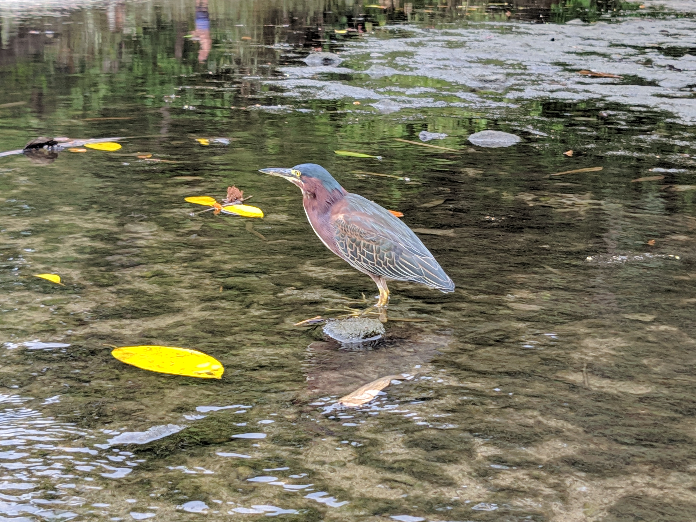

I was first introduced to birding in 2018, through a friend at work. Today, I’ve seen 115 different species! This hobby started with me wanting to know what type of bird I was hearing. I bought a pair of binoculars and got hooked! This hobby continued to grow over the pandemic, because it was a great way to get outside. I’ve mostly birded around Ontario, but I’ve seen a few species in Costa Rica and the United States. I’d love to travel and do some more birding in other countries in the future.
Birds I've Seen
